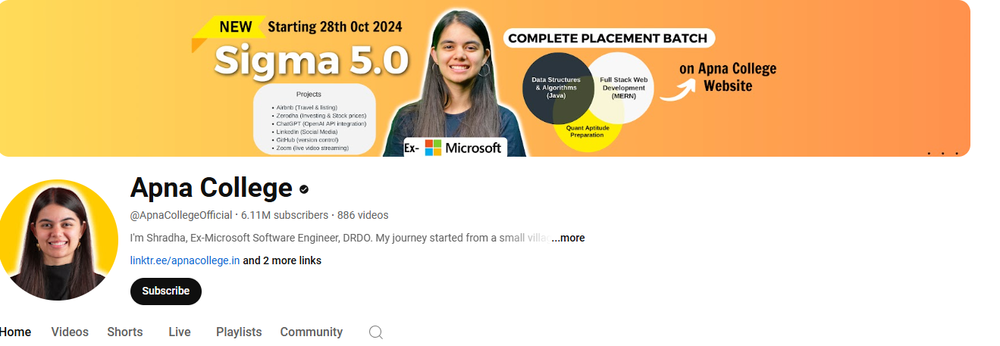

is a non-profit educational organization that offers a free, interactive learning platform for people to learn web development and other programming skills. Here are some key features: Interactive Curriculum: The platform provides a structured curriculum that starts with basics like HTML, CSS, and JavaScript, and progresses to more advanced topics like front-end libraries, back-end development, and data visualization. Certifications: You can earn free verified certifications by completing the required projects and passing the tests. Projects: Each certification requires you to build projects that help you apply what you've learned in a practical way. Community: freeCodeCamp has an active online community where you can connect with other learners, share knowledge, and get support. Job Readiness: The platform aims to help learners get their first developer job by providing them with the necessary skills and projects to showcase in their portfolio. It's a great resource for anyone looking to break into the tech industry without any cost.